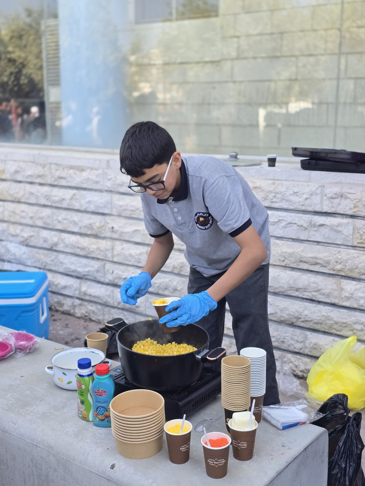

🍽️ الطبق الخيري - أعمال طلاب الصف التاسع
في يوم الاثنين الموافق 28-04-2025، نظّم طلاب الصف التاسع فعالية الطبق الخيري، حيث قاموا بإعداد مجموعة متنوعة من الأطباق الشهية من المعجنات، الحلويات، العصائر، والمأكولات المختلفة. تم بيع هذه الأطباق لطلاب القسم الثانوي ومربي الصفوف وإدارة الكلية الإبراهيمية بالقدس الذين شاركوا بسخاء.
📸 معرض الصور
